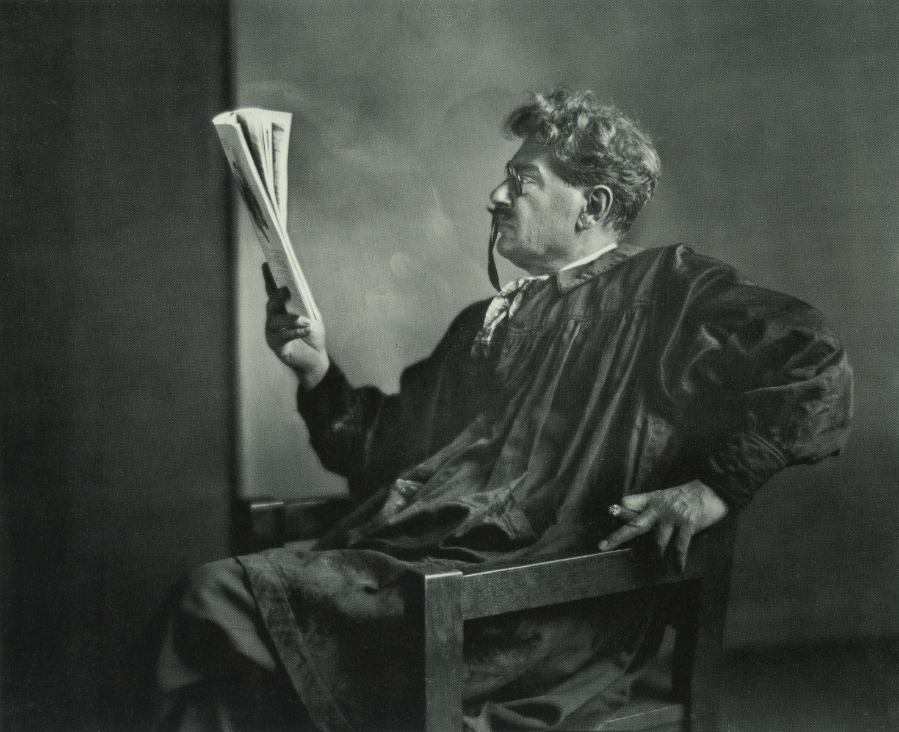

“The fleeting quality of fame is a well-known concept to any scholar of history. Recognition and renown can fade, just as an old-format photographic image will ‘wash-out’ through overexposure. A few names stand the test of time, but most are lost, except to those who knew the individual personally or who are devoted students of the individual’s particular field.”1
— Mehmed Ali
Aram Kazanjian (ca. 1878–1966) held a prominent place in the history of photography. He shaped the world of commercial portraiture in Boston and New York. Like many of the Armenian photographers who rose to prominence during the early part of the 20th century, Kazanjian’s photographic oeuvre and renown have faded into obscurity and lost in the mists of time. To celebrate his life and legacy, this retrospective highlights Kazanjian’s prolific photographic output during a dynamic era in the medium’s history.
Kazanjian’s career emerged and evolved during the early 20th century in Boston. Beyond the camera’s ability to accurately record reality and to produce candid portraiture, there was an aesthetic movement referred to as Pictorialism. This movement aimed to establish photography as fine art. Pictorialist photographers manipulated an image “to express their artistic and abstract ideas” and their “subjective points of view.”2 Influenced by Impressionism, the 19th century art movement that began in France, photographers practicing Pictorialism employed soft-focus techniques and manipulated light to create compositions that were aesthetically pleasing and “painterly in style.”3 The ultimate goal was to elevate photography to the rank of fine art. Along with the practice of producing straightforward portraiture, Kazanjian was influenced by this aesthetic movement that created photographic images rather than simply recording them. As such, his oeuvre reflected a blend of varied photographic styles that evolved around the turn of the 20th century.
Boston became a hub for Pictorialism which promoted photography as fine art. Amongst the influx of Armenian immigrants in this rapidly growing diasporan community, those who were entrepreneurial, artistically creative, and trained to practice photography established successful commercial portrait studios. Armenians were widely known to have mastered photography throughout the Ottoman Empire; this reputation not only made assimilation easier into American society, but it also facilitated their efforts to open studios in the major diaspora hubs of Boston and New York.
Along with Kazanjian, two prominent Armenian studios that represented disparate styles in photographic practice around the turn of the 20th century were the Diran Studio run by Suren and Arsen Diran, and the Garo Studio established by John Higue Garo.
Arsen Diran arrived as an Armenian émigré from Kharpert, Turkey to the Boston area around 1890. He opened a commercial studio sometime around the early 1890s. Whether he had an artistic background or photographic training in Turkey remains unknown. His focus was the production of straightforward, traditional portraits which were often portrayed by subjects in stiff and constricted poses, painted backdrops, and distinctive props to complement or enhance the main subject. Following standard printing techniques, these images were affixed onto decorative mounting cards. Around the early 1900s, Suren Diran (1881–1932) joined his older brother, Arsen. Together, they ran the studio until the late 1920s when Arsen moved to Fresno, California. The studio remained open until Suren’s passing in 1932. Much to his dismay during the last years of his life, the studio was adversely impacted by a massive drop in clients during the Great Depression.
As a traditional commercial studio, the Diran studio used the camera as a recording tool that prioritized meticulously composed, sharp, and standardized portraits. Their work stands in contrast to Pictorialism which infused images with a creative vision that evoked an emotional mood. Diran’s portraiture did not rely on variations in lighting, blurred imagery, painterly techniques, nor experimentation with complex printing methods.

Born in Kharpert, Turkey, John Higue Garo (1870–1939) landed in Worcester, Massachusetts at the age of 14. With his artistic proclivities and penchant for painting, he immersed himself in the study of the arts and the photographic medium. As the proprietor of an upscale portrait studio in Boston, frequented by members of Boston’s elite society, Garo emerged as one of the most celebrated and gifted pictorialist photographers in New England. The renowned Armenian photographer and Garo’s mentee, Yousuf Karsh, regarded him as “one of the greatest photographers in the history of the art.”4 During the early 20th century, Garo was the recipient of many national and international honors and awards for his artistic photographs. Many of his portraits were published in prestigious American publications like The Spur which catered to affluent high society.
A study of Garo’s photographs illustrates his reliance on the aesthetic quality set forth by Impressionism and Art Nouveau (1890–1914) which emphasized soft flowing imagery and natural light. This artistic style influenced him to create photographs of visual beauty that emphasized his subject’s personality and their emotional state. Using soft flowing curves and soft-focus techniques to create blur, Garo was motivated to create a work of art rather than to record it. In his estimation, photography was more than a technical practice to record an image, but an artistic pursuit to make photographs look like paintings or etchings. Described as “a renaissance man with many colors on his palette,” Garo regarded photography as a true form of art which exceeded all other artistic mediums.5
The one outstanding characteristic of photography—the quality that distinguishes it from drawing, painting, etching, or any other means of pictorial representation—is the ability of the lens and sensitive film to record infinitely delicate and subtle gradation of tones. This is where photography is supreme and it is because of this quality that photography claims and holds a special place among the fine arts.6
By the 1930s, Garo did not make the necessary adjustments in his practice to meet the rapid changes occurring in the photographic medium. His acclaimed and innovative technical achievements, like the gum arabic technique which created a painterly effect, became obsolete. Under the influence of the Art Deco movement (1920s–1940s), commercial photography shifted towards streamlined, simpler forms and high contrast in lighting. As such, “the days of the photo’s soft edge and ethereal mood had yielded to the sharp realism practiced by the modernists in the field.”8
“I have enjoyed every minute of my life. Photography is my vocation and I love it because I find in it the medium to interpret the art of painting, the art of music, the art of classical literature. But greatest of all, it is my canvas for the fine art of living. Art is everywhere if one can see, hear or feel it. But most of all, it is in life.”7